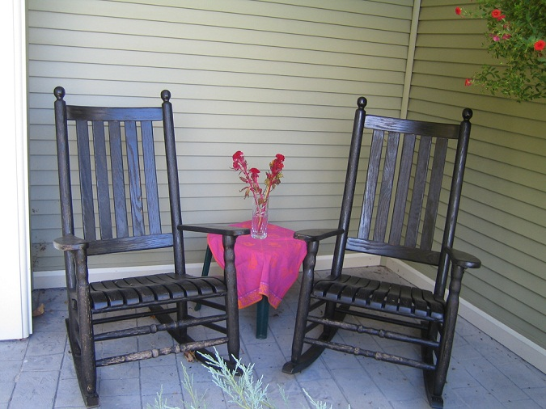

Relaxation. Refreshment. Renewal. Experience all we
have to offer at Groot Winterhoek Mountain Resort.

- Fine dining at the Kliphuis Restaurant
- Luxury lodge rooms
- Cabins available for families or small groups
- Hiking trails, water sports and other recreation
activities
Groot Winterhoek Mountain is the perfect place
for a family vacation or a romantic getaway. Enjoy the beauty of Groot
Winterhoek Mountain.